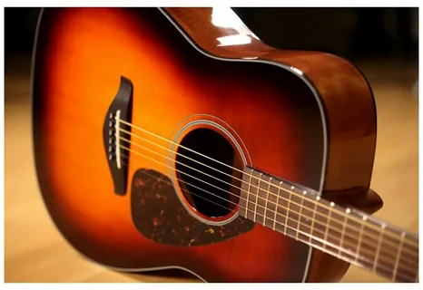
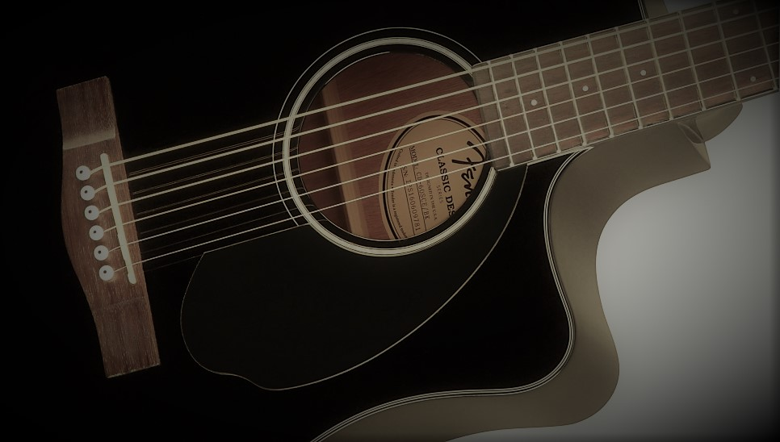

ГитарыРазновидности гитары  Гитара – наиболее популярный музыкальный инструмент в мире. Сегодня без неё не обходится ни один концерт живой музыки. Она хороша как в составе оркестра, бэнда или музыкальной группы, так и в одиночных упражнениях, где музыкант может получить удовольствие даже от игры наедине с самим собой. |